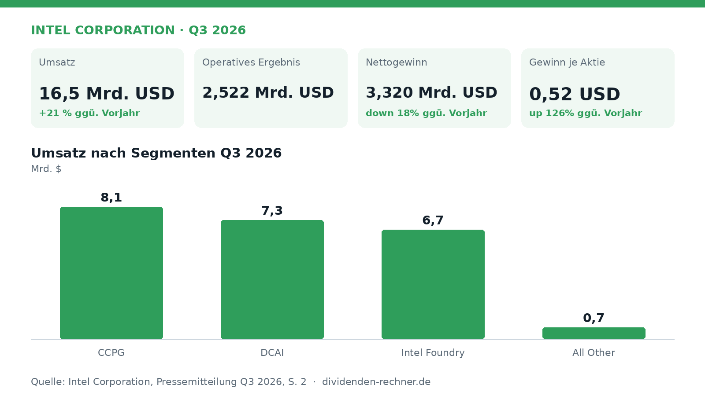
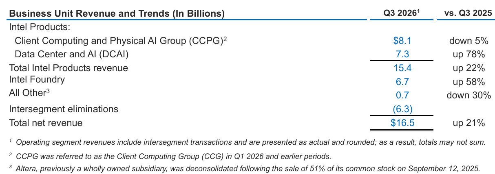

Quartalszahlen

Intel steigert den Umsatz - Kurs bricht aber ein
$INTC
Intel verzeichnet im dritten Quartal 2026 ein Umsatzwachstum auf 16,5 Milliarden US-Dollar, während der Nettogewinn rückläufig ist.

Kurz gesagt
Umsatz: 16,5 Mrd. USD (+21 %)
Gewinn: 3,3 Mrd. USD (-18 %)
- Umsatzplus: Erlöse steigen deutlich auf 16,5 Milliarden US-Dollar.
- Datencenter: Starke Nachfrage nach Xeon-Prozessoren treibt das Geschäft.
- Margendruck: Höhere Kosten belasten den GAAP-Nettogewinn.
Intel wächst bei Umsatz und Rechenzentren, Gewinn sinkt
Intel hat im dritten Quartal 16,5 Mrd. USD umgesetzt und damit den Umsatz im Vergleich zum Vorjahreszeitraum um 21 Prozent gesteigert. Das Unternehmen profitierte vor allem von einer enormen Nachfrage im Bereich der Rechenzentren und Künstliche Intelligenz, während der Nettogewinn attributable to Intel auf 3,3 Mrd. USD sank und damit um 18 Prozent unter dem Wert des Vorjahres lag. Der bereinigte Gewinn je Aktie (Non-GAAP) kletterte hingegen deutlich auf 0,52 USD.

Eigene Darstellung nach Daten aus: Intel Corporation, Quartalszahlen Q3 2026 vom 2026-10-29.Im abgelaufenen Quartal liefen vor allem die Geschäfte im Bereich Data Center and AI (DCAI) stark, wo der Umsatz um 78 Prozent zulegte. Auch die Foundry-Sparte wuchs um 58 Prozent auf 6,7 Milliarden US-Dollar. Die PC-Sparte CCPG verzeichnete dagegen einen leichten Rückgang von 5 Prozent auf 8,1 Milliarden US-Dollar, was auf anhaltende Gegenwind im Markt zurückzuführen ist. Das Management betonte die Notwendigkeit, zusätzliche Kapazitäten freizuschalten.
„Unsere Q3-Ergebnisse demonstrieren eine verbesserte Ausführung, bedeutsame Fortschritte beim Ausbau der Lieferung und die fortgesetzte Weiterentwicklung unserer Prozesstechnologie.“
— Lip-Bu Tan, CEO (aus dem Englischen übersetzt)

Geschäftsbereichsumsatz und Trends. Quelle: Intel Corporation, Quartalszahlen Q3 2026 vom 2026-10-29, S. 2. Ausschnitt nur zugeschnitten, sonst unverändert.Die Bruttomarge nach GAAP lag im dritten Quartal bei 43,0 % nach 38,2 % im Vorjahr. Das operative Ergebnis belief sich auf 2,5 Mrd. USD, während im Vorjahreszeitraum ein operativer Gewinn von 683 Millionen US-Dollar erzielt worden war. Das Unternehmen generierte im dritten Quartal einen operativen Cashflow von 13,2 Mrd. USD.
Der freie Cashflow des Unternehmens bewegte sich in den vergangenen Geschäftsjahren durch hohe Investitionen in die Fertigung überwiegend im negativen Bereich, mit Werten von -4,9 Milliarden US-Dollar im Jahr 2025 und -15,7 Milliarden US-Dollar im Jahr 2024. Die Nettoverschuldung belief sich zum Ende des Jahres 2025 auf 32,3 Milliarden US-Dollar, was dem 2,3-fachen des EBITDA entspricht. Eine durchgehende Serie von Dividendenerhöhungen liegt aktuell nicht vor; in den Jahren 2020 bis 2022 erfolgten Erhöhungen jeweils im Januar, während für 2026 bisher keine Anpassung vorgenommen wurde.
Für das vierte Quartal 2026 prognostiziert das Management einen Umsatz zwischen 15,0 Milliarden und 16,0 Milliarden US-Dollar sowie einen GAAP-Gewinn je Aktie von 0,10 US-Dollar. Als Risiken nannte das Unternehmen den anhaltenden Abschwung im PC-Markt, geopolitische Unsicherheiten und hohe Investitionen in neue Prozesstechnologien wie Intel 14A, die sich erst langfristig auszahlen müssen.
Die wichtigsten Zahlen im Überblick
| Kennzahl | Wert | Veränderung zum Vorjahr | Quelle |
|---|---|---|---|
| Umsatz | 16,5 Mrd. USD | +21 % | S. 1 |
| Operatives Ergebnis | 2,5 Mrd. USD | – | S. 6 |
| Nettogewinn | 3,3 Mrd. USD | down 18% | S. 6 |
| Gewinn je Aktie | 0,52 USD | up 126% | S. 1 |
| Operativer Cashflow | 13,2 Mrd. USD | – | S. 8 |
Dividendenkennzahlen im Überblick (eigene Berechnung)
| Kennzahl | Wert | Rechenweg |
|---|---|---|
| Free Cashflow, Geschäftsjahre (Mrd. USD) | 2021: 9,1; 2022: -9,6; 2023: -14,3; 2024: -15,7; 2025: -4,9 | Kapitalflussrechnung laut FMP |
| Nettoverschuldung / EBITDA, Jahresende | 2021: 1,0; 2022: 1,5; 2023: 3,8; 2024: 34,7; 2025: 2,3 | Bilanz und Gewinn- und Verlustrechnung laut FMP |
| Übliche Erhöhung der Dividende | Januar | 3 von 3 Jahren (2020, 2021, 2022), Ankündigung |
| Dividendenerhöhungen in Folge | 0 Jahre | Kalenderjahressummen bis 2024 |
| Dividendenwachstum 2019–2024 | -21,5 % p. a. | Kalenderjahressummen |
Quelle: Intel Corporation, Quartalszahlen Q3 2026 vom 2026-10-29; Kurs- und Dividendendaten: Financial Modeling Prep. Rechenwege eigene Berechnung. Keine Anlageberatung.
Hinweis: Dieser Text dient der allgemeinen Information und ist weder Anlage-, Steuer- noch Rechtsberatung. Kapitalanlagen sind mit Risiken verbunden, bis hin zum Totalverlust.